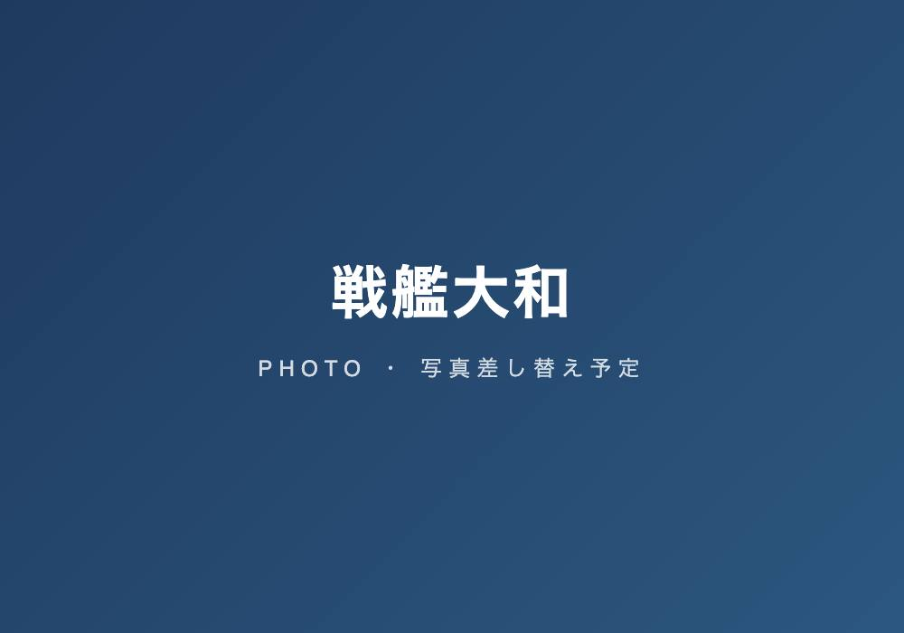
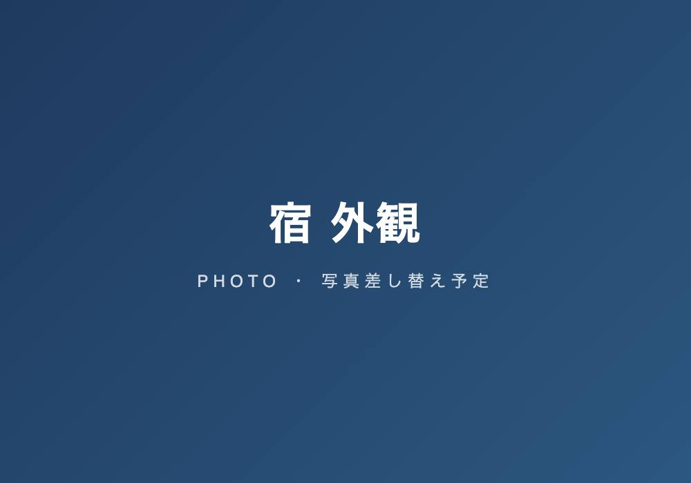
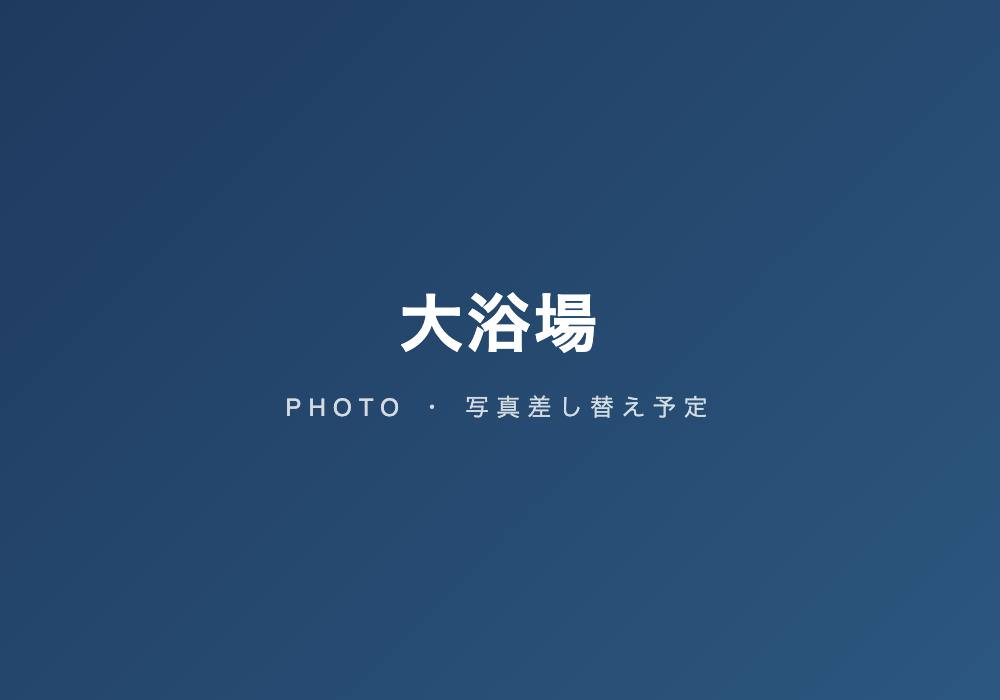
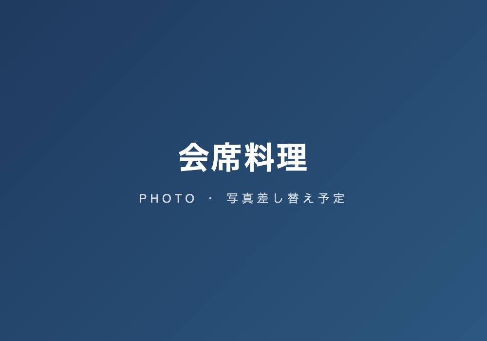
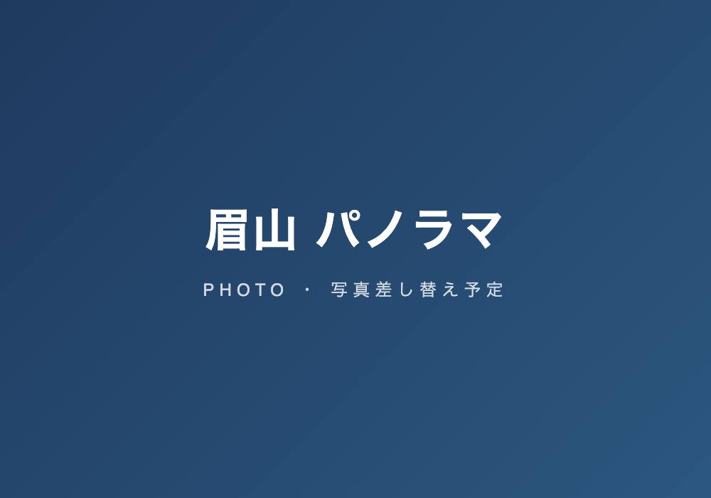
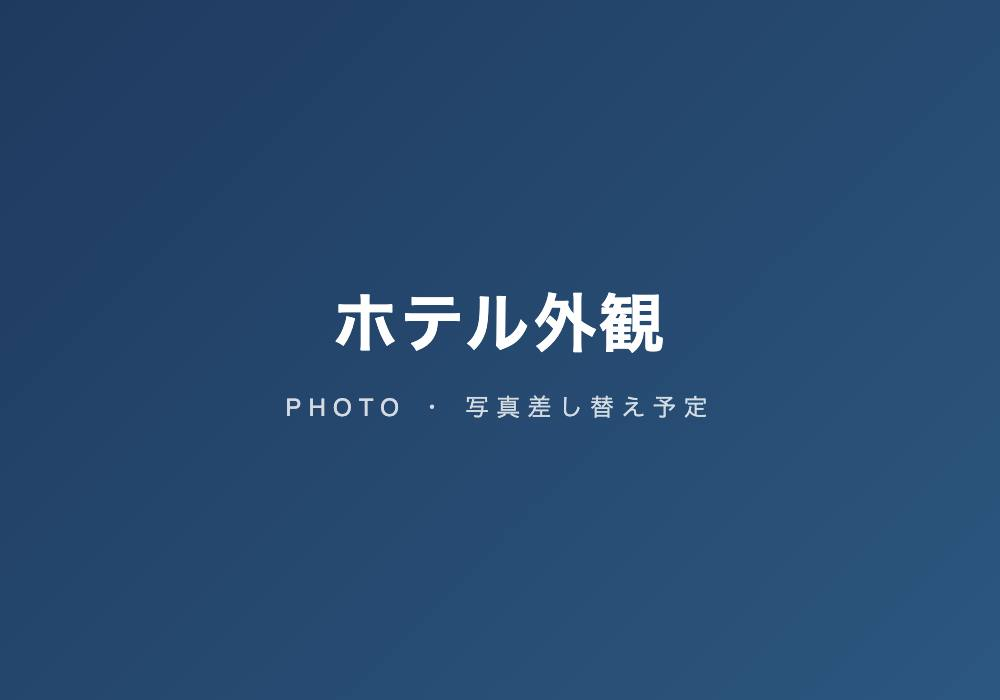
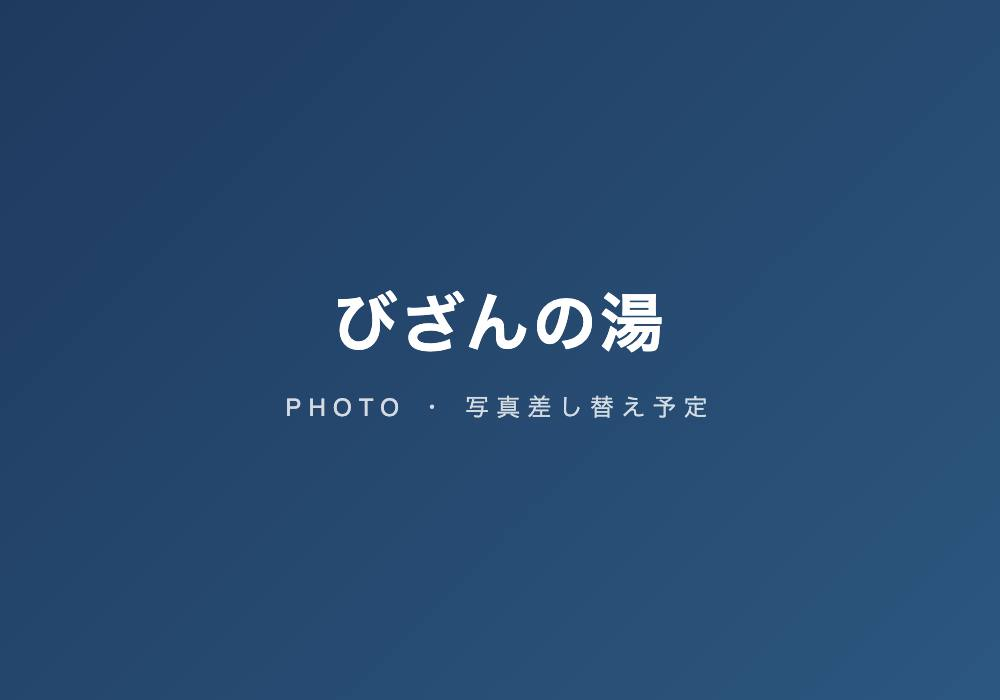
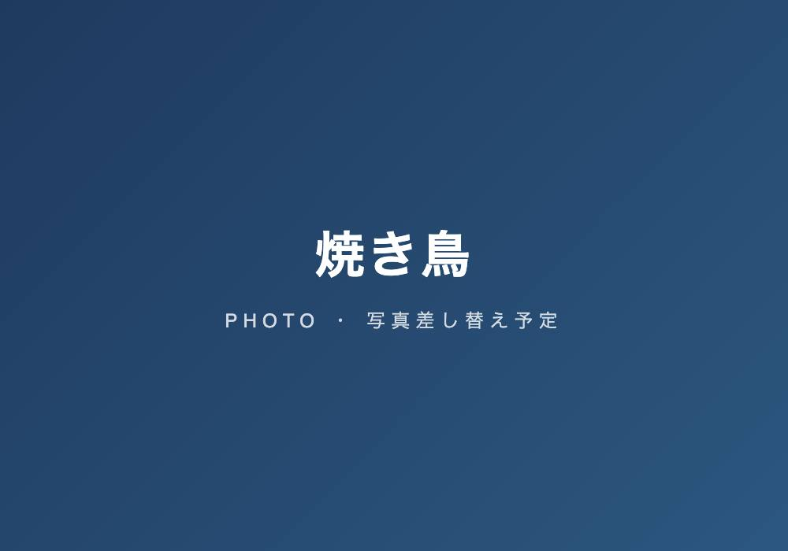

ROAD TRIP ITINERARY
四国の旅
2026年7月 ／ 8泊9日
2026年7月5日(日) 〜 7月13日(月)
福津~広島♨🏨～呉～今治♨🏨～吉野川~眉山～徳島♨🏨～大浜海岸~室戸岬♨🏨～四万十川♨🏨～高知~足摺岬♨🏨～宇和島♨🏨~佐多岬~別府♨🏨～大隅半島～福津
ROUTE MAP
旅のルート

総走行 1,683 km ・ 8泊9日 ・ いで湯 8 湯
DAY 1
7/5（日）
- 走行 260 km
- 薬研堀 天然温泉 ♨
-
9:00 自宅 防府東ＩＣ〜廿日市ＩＣ高速料 ¥2,150
-
12:30-13:30 防府市内 当日決定（紅屋 八王子本店） ☎0835-38-1001昼食 ¥4,000
-
16:00 スーパーホテル広島天然温泉・薬研堀通り薬研堀 天然温泉 ♨ 単純弱放射能泉
- 部屋
- ツインルーム【14㎡】
- プラン
- ☆無料朝食ビュッフェ・男女別天然温泉
- 所在
- 広島県広島市中区田中町2-28
効能痛風・疲労回復・リウマチ・神経病
¥12,170 じゃらんポイント（宿泊料＋駐車料） ¥-10,100実質 ¥2,070 -
八昌（薬研堀） ☆百名店
鉄板で「ジュ〜ッ」と炒める音やソースの焦げる匂いが食欲を刺激します
夕飯 ¥5,000
DAY 2
7/6（月）
- 走行 441 km
- 湯ノ浦 ♨
-
8:00 自宅 【セブンイレブン】
朝食6:30〜（風呂は24時間）
朝飯 ¥0 -

9:00-11:30 大和ミュージアム【全長26.3mの戦艦大和】戦艦「大和」を建造した軍港。設計図や写真、潜水調査水中映像などをもとに、可能な限り詳細に再現した
観覧料＋駐車場 ¥2,300 -
11:40-12:30 呉ハイカラ食堂
海上自衛隊認定の「呉海自カレー」や旧軍港に由来した「海軍料理」が準備されている
昼食 ¥4,000 -
しまなみ海道（西瀬戸尾道IC〜大浜PA〜瀬戸田PA〜上浦PA〜来島海峡SA〜今治料金所）高速料 ¥2,950
-
16:30 瀬戸内の水軍浪漫をたどる宿



湯ノ浦 ♨ 低張性弱アルカリ性冷鉱泉- 部屋
- スタンダード洋室【27㎡】
- プラン
- 【お部屋でゆったり楽しむ】お肉もお魚も楽しめる「料理長おすすめ定食」
- 所在
- 愛媛県今治市湯ノ浦30番地
効能神経痛・筋肉痛・五十肩・運動麻痺・痔疾・慢性消化器病・病後回復・疲労回復・冷え性
¥20,700 シルバー＋SPウイーク ¥-5,000実質 ¥15,700 -
お酒お酒 ¥2,000
DAY 3
7/7（火）
- 走行 620 km
- びざんの ♨
-
9:30 宿発
朝食7:30〜（風呂は6:00〜9:00）
朝飯 ¥0 -
12:10-13:00 さぬきやうどん ☎0883-72-5125
手打ち・足踏みなど、昔ながらの職人の技で作り上げたさぬきうどん
昼食 ¥2,000 -
13:40-14:30 脇町うだつの町並み（道の駅 藍ランドうだつ）
江戸〜明治時代、豪商たちの隆盛を示す「うだつ」がそびえる町並み（国指定重要伝統的建造物群保存地区）
軽食 ¥1,000 -

16:00-17:00 眉山山頂「眉のごと雲居に見ゆる阿波の山」と万葉集にも詠まれた徳島市のシンボル・眉山（びざん）
-
17:30 ホテルサンルート徳島


 びざんの ♨ ナトリウム・カルシウムー塩化物冷鉱泉
びざんの ♨ ナトリウム・カルシウムー塩化物冷鉱泉- 部屋
- 【East館禁煙】モデレートツイン
- プラン
- 【素泊まり&早割】お泊りだけのシンプルステイプラン
- 所在
- 徳島県徳島市元町1-5-1
効能神経痛、関節痛、五十肩、関節のこわばり、慢性消化器病、痔疾、冷え症、病後回復、慢性婦人病
¥17,400 ゴールド＋SPウイーク（宿泊料＋駐車料） ¥-4,500実質 ¥12,900 -

18:30〜 ぽんず（22〜25年 百名店） ☎088-635-5566県外から地鶏、河内鴨を取り寄せ、大きめに切り分けている為、食べ応えがある
夕飯 ¥10,000
DAY 4
7/8（水）
- 走行 804 km
- 大浴場 ♨
-
7:30-8:00 セルフうどん やま 徳島駅前店
07:30〜 手打ち麺は、コシともちもち感が特長。出汁は香川のうどんつゆ専門会社と共同開発
朝飯 ¥2,000 -
8:30 宿発
風呂は6:00〜10:00
-
 9:45-10:30 蒲生田岬（四国最東端）
9:45-10:30 蒲生田岬（四国最東端）シンボルである灯台からの景色はまさに絶景。晴れた日は海を挟んだ和歌山県まで見渡せることもある
-
12:10-13:30 手打ち蕎麦 美波乃風（大浜海岸） ☎080-6235-4110
まさに隠れた名店とはこの事！！ 蕎麦は十割で腰も香りも申し分ない
昼食 ¥3,000 -
14:30-15:00 道の駅 宍喰温泉
目の前には波乗りの絶好ポイントである大手海岸を望む道の駅
軽食 ¥1,000 -
16:00-17:45 室戸岬（四国の東南端）
足摺岬と相対し、太平洋につき出ている岩礁と岬をおおう亜熱帯性樹林が見事
-
 18:00-19:00 道の駅 キラメッセ室戸・食遊鯨の郷
18:00-19:00 道の駅 キラメッセ室戸・食遊鯨の郷オーシャンビューの開放的な店内で、室戸沖の大海原を眺めながら鯨料理を味わえる（L.O. 18:30）
夕飯 ¥5,000 -
19:15 ニューサンパレスむろと


 大浴場 ♨
大浴場 ♨- 部屋
- 海と夕日が見えるフローリングタイプ（布団式） 現地払い
- プラン
- 【素泊まり】フェイスタオル（￥50）バスタオル（￥200）浴衣（￥250）
- 所在
- 室戸市領家235-1
¥13,200 シルバー + じゃらん ¥-8,200実質 ¥5,000
DAY 5
7/9（木）
- 走行 1,096 km
- 松葉川 ♨
-
7:00 宿発
コンビニ
朝飯 ¥2,000 -
8:00-8:30 岩崎弥太郎銅像
三菱財閥の創始者。出生は地下浪人だが、その後三菱商会を設立して経済界に進出し、巨利を得た
-
 10:30-12:00 久礼大正町市場 田中鮮魚店 ☎0889-52-2729
10:30-12:00 久礼大正町市場 田中鮮魚店 ☎0889-52-2729高知で鰹を食べるならここ！ 初鰹の旬は春4月〜7月ごろ
昼飯 ¥5,000 -
13:30-14:00 天狗高原〜大野ヶ原育成牧場
「天空の道」と呼ばれ、四国カルストを東西に縦断しているドライブコース。日本百名道
-
16:00 ホテル松葉川温泉


 松葉川 ♨ 単純硫黄冷鉱泉
松葉川 ♨ 単純硫黄冷鉱泉- 部屋
- 川側 和室８畳 現地払い
- プラン
- 『四万十の旅 お手頃膳』プラン【二食付】
- 所在
- 高知県高岡郡四万十町日野地605-1
効能筋肉痛、冷え性、病後回復期、健康増進、きりきず、抹消循環障害、うつ状態、皮膚乾燥症、糖尿病
¥23,300 ゴールドクーポン ¥-2,500実質 ¥20,800 -
お酒お酒 ¥2,000
DAY 6
7/10（金）
- 走行 1,209 km
- あしずり ♨
-
9:30 宿発
朝食7:30〜（風呂は6:00〜9:00） 道の駅 ビオスおおがた「かりんとまんじゅう」や「黒潮レモネード」（10:30〜11:00）
軽食 ¥1,000 -
12:00-13:00 元祖ペラ焼西村
創業昭和32年、じゃこ天の入った土佐清水のソウルフード＝ペラ焼き
昼飯 ¥2,000 -
 13:10-14:00 ジョン万次郎資料館
13:10-14:00 ジョン万次郎資料館漂流からアメリカ暮らし、帰国してから近代日本の夜明けのために活躍した万次郎の数奇な生涯を学習できる
入館料 ¥880 -
14:10-15:50 足摺岬展望台
四国最南端の岬で、岬の西の臼碆は、日本列島で黒潮が最初に接岸する場所です
入場料 ¥2,400 -
16:00 星空と海の宿 足摺国際ホテル


 あしずり ♨ 単純弱放射能温泉
あしずり ♨ 単純弱放射能温泉- 部屋
- 【海側コンパクトルーム】〔和室8畳〕
- プラン
- ■あしずり基本会席■足摺流の＜鰹のタタキ＞ほか、旬の幸をたっぷりと♪
- 所在
- 高知県土佐清水市足摺岬662
効能神経痛、慢性消化器病、冷え性、慢性婦人病、動脈硬化症、痛風、高血圧症
¥32,694 ゴールドクーポン ¥-4,500実質 ¥28,194 -
お酒お酒 ¥2,000
DAY 7
7/11（土）
- 走行 1,398 km
- 伊方亀ヶ池 ♨
-
9:30 宿発
朝食7:00〜（風呂は5:30〜8:30） 道の駅 みしょうMIC（11:10〜11:30）
朝飯 ¥0 -
11:30-12:00 紫電改（しでんかい）展示館
昭和53年に海底から引き上げられた旧日本海軍の戦闘機が国内で唯一見られる。世界に4機しか現存しない貴重なもの
入館料 ¥0 -
13:00-14:00 まえの ☎0895-22-8288
十割「細挽きせいろ」そばと皮ごと挽きぐるみした香り高い「粗挽き田舎」そばの2種類が味わえる
昼飯 ¥4,000 -
 14:10-15:30 宇和島城（天守閣は国指定重要文化財）
14:10-15:30 宇和島城（天守閣は国指定重要文化財）標高80mの丘上に築かれた平山城で藤堂高虎の築城による。伊達氏2代宗利が大改修し現在の形となる
天守入場料＋駐車場 ¥500 -
15:50-16:00 河合太刀魚巻店【創業150年の老舗】 ☎0895-52-0122
肉厚で脂がタップリのった太刀魚を天然の竹に巻き付け、炭火でじっくり焼いたもの
軽食 ¥2,000 -
16:40-17:30 エースワン 八幡浜店
開業50周年。四国に19店舗を展開するスーパー
-
17:40-18:30 八幡浜市内 夕食 食堂ごりらくん【3.23】／炭火焼肉 平和伝【3.03】夕食 ¥6,000
-
19:00 亀ヶ池温泉 亀乃湯別邸


 伊方亀ヶ池 ♨ ナトリウムー塩化物温泉
伊方亀ヶ池 ♨ ナトリウムー塩化物温泉- 部屋
- ツインルーム【天海】14.4㎡
- プラン
- 【素泊り】 地下1,500mから湧き出る天然温泉を満喫！四国最西端の温泉
- 所在
- 愛媛県西宇和郡伊方町二見甲1289番地
効能筋肉痛、冷え性、病後回復期、健康増進、きりきず、抹消循環障害、うつ状態、皮膚乾燥症
¥15,600 6月＆7月限定クーポン ¥-1,000実質 ¥14,600
DAY 8
7/12（日）
- 走行 1,468 km
- 別府 ♨
-
8:00 宿発
朝食7:00〜（風呂は7:00〜10:00）
朝食 ¥1,000 -
8:30 三崎港（佐田岬）
晴れた日には、対岸の九州を望むことが出来るほどの近さにあり、佐賀関へのフェリー航路がある
軽食 ¥1,000 -
9:30 三崎港 発【国道九四フェリー】（予約済）
愛媛の佐多岬半島の先端、三崎から九州大分の佐賀関までを結ぶ九州・四国間の最短航路（31㎞）
フェリー代 ¥11,120 -
10:40 佐賀関港 着
大分市景観条例の景観形成重要地区に該当している
-
11:40-13:30 とんかつ & とり天 しげのや食堂
愛しのソウルフード選手権！九州沖縄 食べにいき大賞。優勝！
昼食 ¥5,000 -
14:00-14:30 道の駅 たのうらら
絶景を見ながらスイーツやドリンクでゆっくりと過ごせます。ごく稀にイルカの姿が見える事も
-
15:30 別府ステーションホテル別府 ♨ ナトリウムー炭酸水素塩泉
- 部屋
- スタンダードツイン
- プラン
- 【お得な朝食バイキング付きプラン】
- 所在
- 大分県別府市駅前町13-4
効能慢性皮膚病、神経痛、筋肉痛、慢性消化器病、湿疹、皮膚病、美肌効果
¥8,330 じゃらん スペシャル ¥-800実質 ¥7,530 -
別府市内 夕食 ぎょうざ 湖月【3.72 百名店】 ⇒ 亀正くるくる寿司【3.70】夕飯 ¥10,000
DAY 9
7/13（月）
- 走行 1,683 km
-
9:30 宿発
朝食7:00〜（風呂は6:00〜9:00）
朝飯 ¥0 -
10:40-11:00 道の駅 くにさき
新鮮野菜が並ぶ農産物直売所と国東の銘菓、地酒などが並ぶ土産物屋がある
-
11:30-12:00 道の駅 くにみ（国東半島先端部）
海の向こうに山口県を遠望するナイスビューポイント。海の幸などんの特産物が並ぶ。「たこめし膳」がお勧め
軽食 ¥1,000 -
12:15-12:30 長崎鼻
国東半島の先端に位置します。周防灘に向かい「鼻」のように突き出した岬
-
13:00-14:30 宇佐神宮
全国に4万社ある八幡様の総本宮。八幡大神（応神天皇）・神功皇后をご祭神にお祀りし、神亀2年に創建された
駐車場 ¥400 -
14:30〜 かくまさ 観光土産店
郷土料理のだんご汁をはじめ、大分名物とり天、宇佐名物からあげも大人気
昼食 ¥3,000 -
17:00 レストラン 明治屋 飯塚店
こだわりの明治屋ハンバーグは和豚もちぶた100％使用。豚肉の旨味と甘みを存分に堪能できる
夕飯 ¥4,000 -
18:00 自宅（帰着）ガソリン ¥21,038
BUDGET
費用集計
概算予算（実績欄は旅行後に追記）